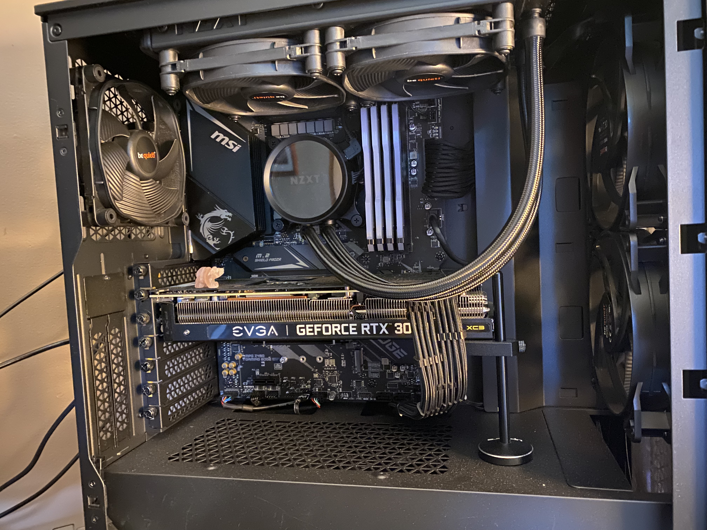
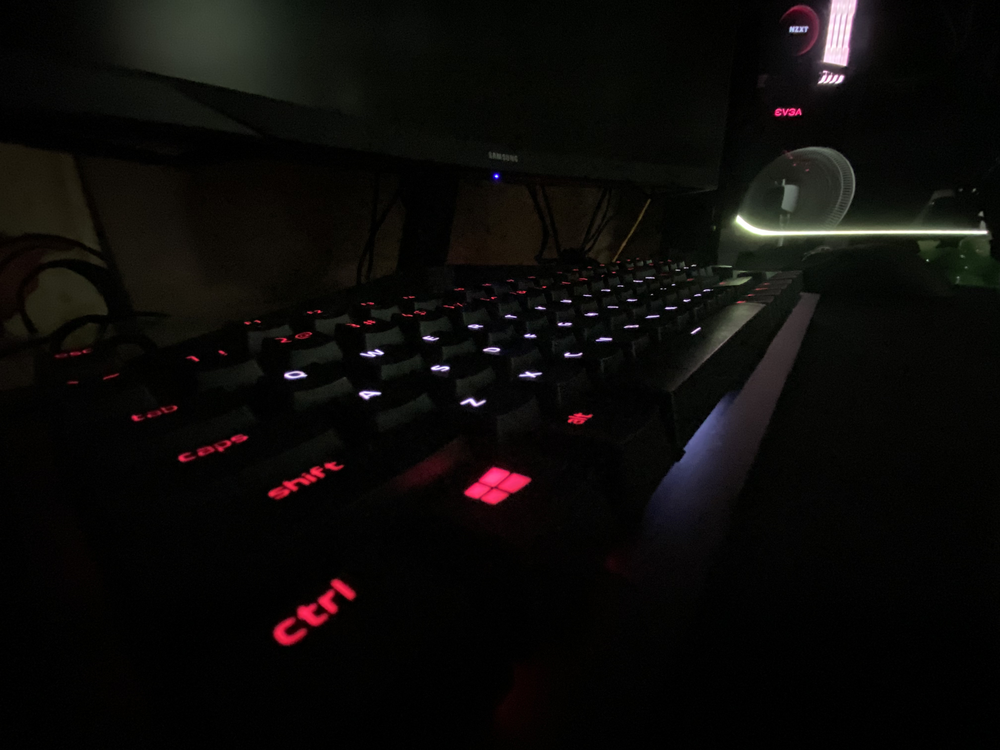

- Nvidia 30 series GPUs and AMD Radeon 6000 series GPUs are highly sought after PC parts
- Stock has been severely low since these GPUs hit markets
- Gamers and hobbyists have been fighting bots and scalpers for what little stock hits shelves
I figured since my upcoming video story assignment will be focused on hobbyists’ response to the global microchip shortage, it would be interesting to talk about my experiences as well.
The Nvidia 30 series graphics processing units hit markets on September 17, 2020...for about five minutes. Immediately stock was scooped up by mostly bots, and a few lucky hobbyists and gamers here and there. These bots were employed by scalpers to buy all the stock and resell at insane prices. What we didn’t know back then is that this would become the reality for the foreseeable future.
In late 2019, I had been wanting to upgrade my PC for a while. My computer was pretty outdated and gaming is one of my favorite hobbies. So naturally, I took my computer apart and salvaged what I could. Halfway through 2020, I heard about the 30 series coming out, so I decided to grab a card when they came out. Little did I know, it would be a pain to try and get one of these cards after release.
To eventually get my hand on these cards, I had to literally scour the internet. I went from Best Buy to Amazon to NewEgg continuously checking stock. Nothing. Eventually I resorted to watching a stream which monitored the stock on all websites and sounded an alarm when stock became available. I kept the stream on at work in my pocket, while I was doing schoolwork and in the background of my bedroom. Eventually, after about a week of doing this, the buzzer rang. I sprang into action, adding as many cards as I could to my cart on BestBuy. Only one made it in, but I managed to complete the checkout and got the card delivered two weeks later.
While the global supply chain issues no doubt contribute to this problem, normal consumers should not have to compete with bot resellers to get their hands on products. It is a sad state of affairs when people are buying GPUs for $3000 on StockX. Hopefully the issue clears up soon so others don’t have to sit on a Twitch stream for a week like me.
